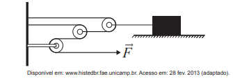

🔹 Ir para Problema 14 | 🔹 Ir para Problema 16
Questão 59. (ENEM 2016)
Uma invenção que significou um grande avanço tecnológico na Antiguidade, a polia composta ou a associação de polias, é atribuída a Arquimedes (287 a.C. a 212 a.C.). O aparato consiste em associar uma série de polias móveis a uma polia fixa. A figura exemplifica um arranjo possível para esse aparato. É relatado que Arquimedes teria demonstrado para o rei Hierão um outro arranjo desse aparato, movendo sozinho, sobre a areia da praia, um navio repleto de passageiros e cargas, algo que seria impossível sem a participação de muitos homens. Suponha que a massa do navio era de 3 000 kg, que o coeficiente de atrito estático entre o navio e a areia era de 0,8 e que Arquimedes tenha puxado o navio com uma força F⃗, paralela à direção do movimento e de módulo igual a 400 N. Considere os fios e as polias ideais, a aceleração da gravidade igual a 10 m/s² e que a superfície da praia é perfeitamente horizontal.
O número mínimo de polias móveis usadas, nessa situação, por Arquimedes foi
1) Força de atrito estático máxima que precisa ser vencida
Massa do navio:
m = kg
Peso (força normal): N = m·g =
N
Coeficiente de atrito estático: μ =
.
Força de atrito máxima: Fat = μ·N ≈
N.
2) Vantagem mecânica necessária do conjunto de polias
Força que Arquimedes é capaz de fazer: F =
N.
Vantagem mecânica requerida: V = Fat / F ≈
3) Relação com o número de polias móveis
Em um sistema de polias ideais, a vantagem mecânica é V = 2n, em que n é o número
de polias móveis. Assim, é preciso que 2n ≥ 60.
Testando:
25 = (ainda é menor que 60)
26 = (primeiro valor maior ou igual a 60).
Logo, o número mínimo de polias móveis é
.
Assinale a alternativa correta: